Design Portfolio
I have been designing since four years, samples of my work can be seen below.

This is a poster I made during my part-time job in B-fit which has 200 franchise and was gaining another one during that time. I made the new one’s opening announcement. The slogan was “The lost piece of puzzle found its place”.
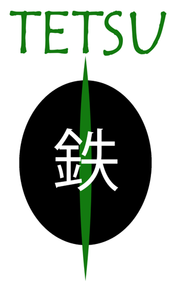Tetsu means iron in Japanese. This is my first logo design for a comic store at my graphic design course. It was the first time that I thought it can be my job.
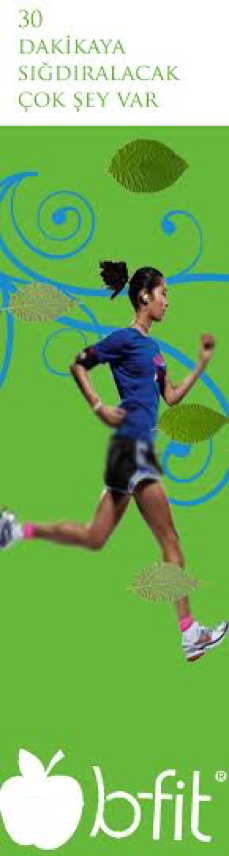
This one is a bookmark I made for B-fit as a gift for members of the gym company.
The slogan was “There are many things to fit in 30 minutes.”
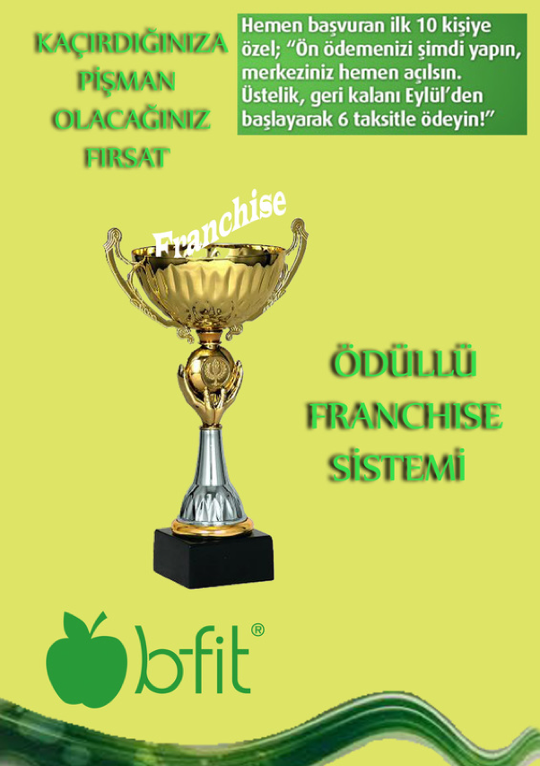This one is an advertisement I made for B-fit’s franchise selling. The slogan was “the chance that you will be sorry to miss”.
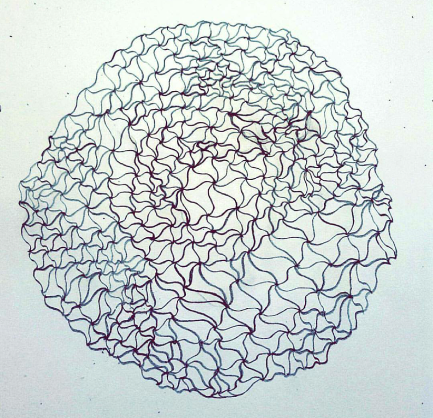It is a drawing I made in art course in 11th grade so that I could improve my hand-drawing skills.
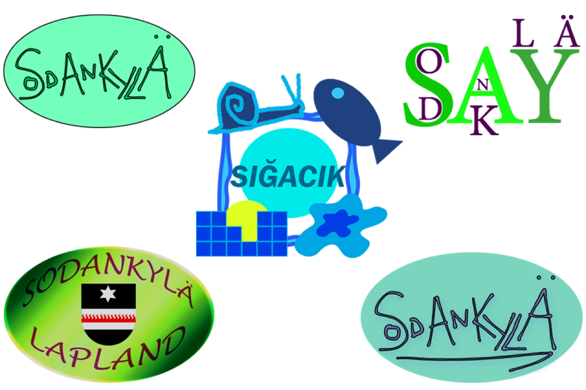These are my Snapchat Geofilter designs for Sodankyla, the town in Lapland-Finland which I came with AFS as an exchange student, and Sigacik, my hometown in Izmir, Turkey. Among all of them, only Sigacik got accepted and activated by Snapchat and it is still active.
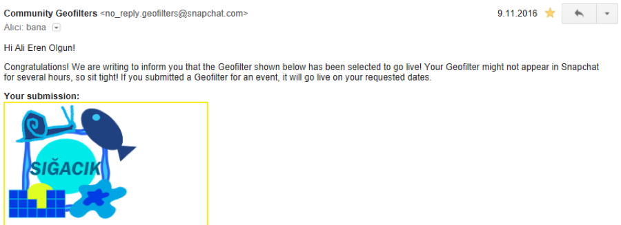
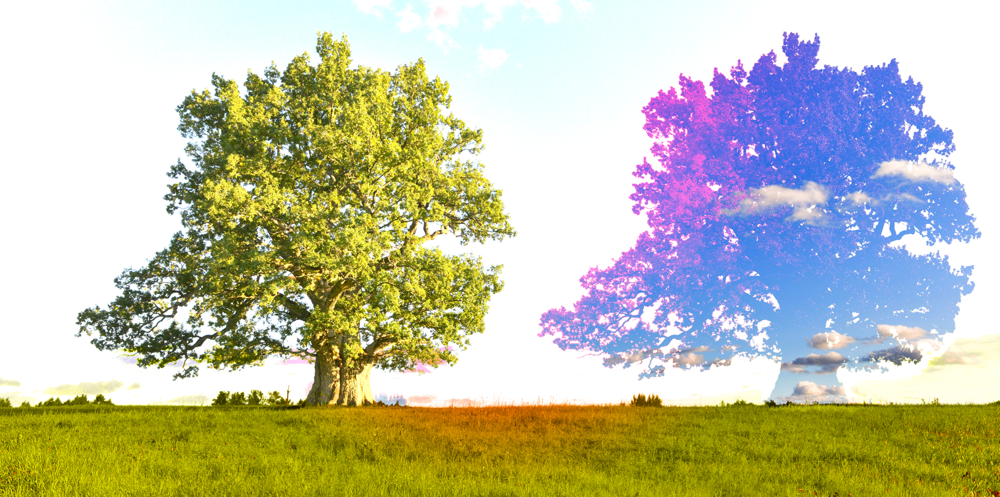This one is a photo edit I made on an image I got from internet. Originally there was only one tree but I copied it and I merged the copy with the sky. Later on I had light effects which made it better.
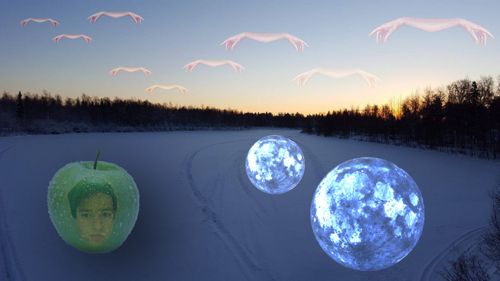‘Hands on the sky, moon on the lake.
Me in the apple, snow froze the lake.’
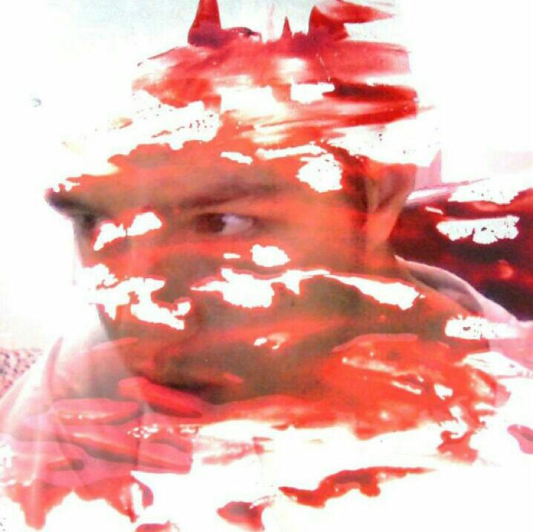This is a design I made using myself and an object. I like fusing photos to create something different.
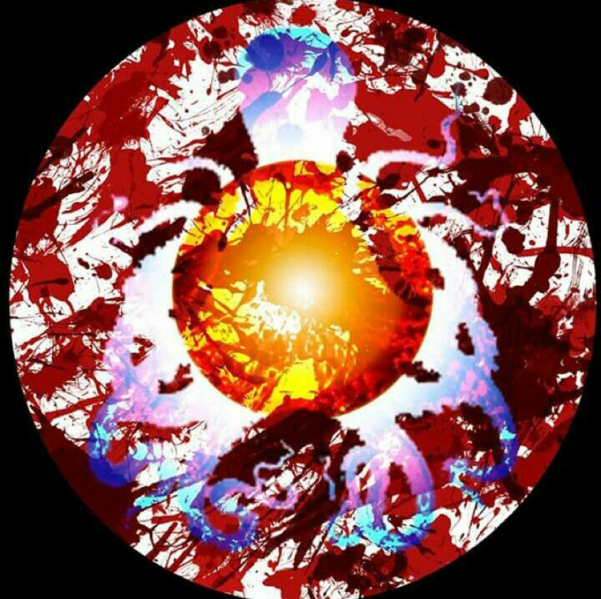
This one is an experimental design I made with light adjusments and shapes.
I was inspired by the anime series called Assassination Classroom.
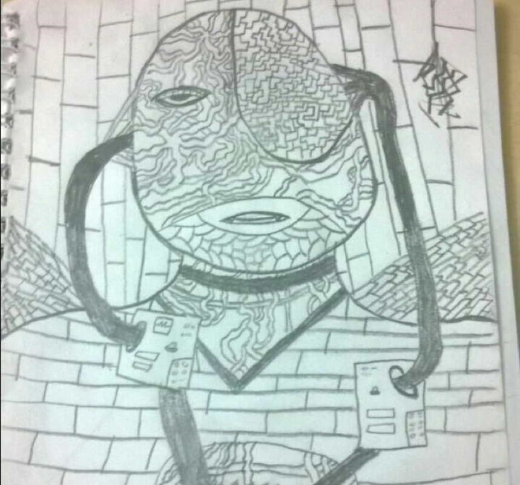This is a drawing I made on the last page of my Italian course’s notebook during the break time. It took some time but I enjoyed making it. It is a person merged with cables and bricks.
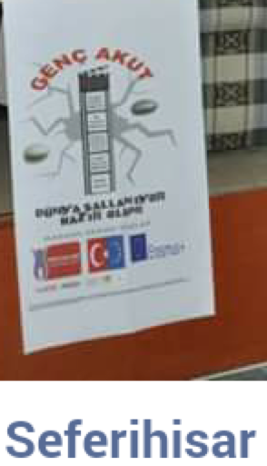
I was a part of a project team called YOUNG AKUT, a sub division of AKUT, and in 10th grade we made a social service project which European Union granted money to it. The name of the project was “Moving Stones on the Land” and I was the founder of the name. The project was to inform locals of Seferihisar about earthquakes and give basic education and training so that they can stay safe during an earthquake. We made activities and programs in Seferihisar and Sigacik. During the project I worked with the computer and design team and I designed the template of the logo of the project. I also made poster design with the same template so that template was used in many different areas during the project.
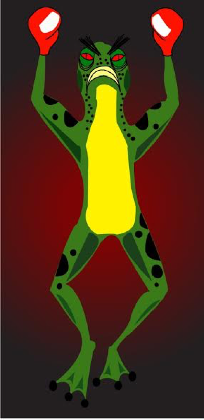My first mascot design that I made during graphic design course in 9th.
Unlike a standart mascot, I made this one angry instead of cute and happy one.
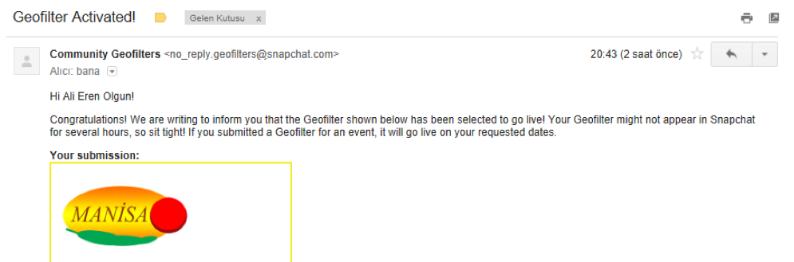
And my second active Snapchat Geofilter. It is active in Manisa
which is famous for its food such as Manisa Kebab.